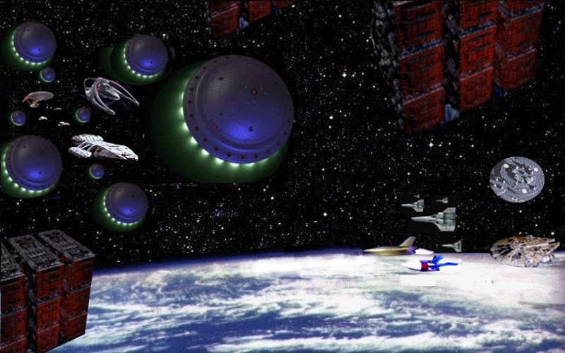

Episode Guide
Star Trek Perry Rhodan Perrypedia SSPGAndromeda Angel Babylon 5 Buck Rogers Buffy Dollhouse
Firefly Fringe Galactica Heroes Lost Lost World Marvel
Mutant-X Speed Racer The Land of the Lost Tru Calling Twin Peaks X-Files Voyager
Friends Married With Children Seinfeld The Big Bang Theory The IT Crowd